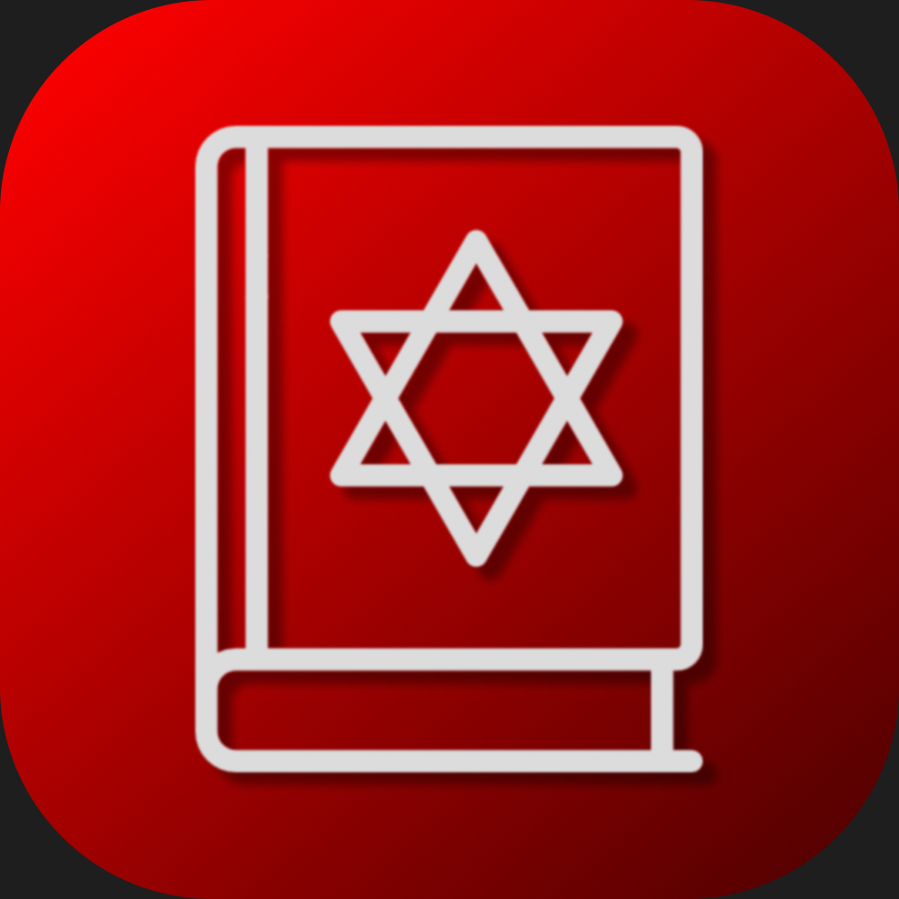

Siddur Live
A Jewish prayer book in your pocket — free, always with you. Еврейский молитвенник в вашем кармане — бесплатно, всегда с вами. סידור יהודי בכיס שלך — חינם, תמיד איתך.
Siddur Live is a free mobile prayer app with daily prayers, Shabbat and holiday liturgy, transliterations and translations — available on Android.
The app is completely free. Your voluntary donation helps keep it alive and supports ongoing development. Thank you. 🙏
Siddur Live — бесплатное мобильное приложение с ежедневными молитвами, текстами на Шаббат и праздники, транслитерацией и переводами — доступно на Android.
Приложение полностью бесплатно. Ваше добровольное пожертвование помогает поддерживать его и развивать. Спасибо. 🙏
Siddur Live — אפליקציית תפילה חינמית לנייד עם תפילות יומיות, ליטורגיה לשבת ולחגים, תעתיקים ותרגומים — זמינה ל-Android.
האפליקציה חינמית לחלוטין. תרומתך הרצונית מסייעת לשמור עליה פעילה ולפתח אותה. תודה. 🙏
💛 Support the Project 💛 Поддержать проект 💛 תמוך בפרויקט
Every contribution, no matter how small, means the world. Thank you for supporting free Jewish software. Каждый вклад, даже небольшой, очень важен. Спасибо, что поддерживаете бесплатное еврейское приложение. כל תרומה, קטנה כגדולה, חשובה מאוד. תודה שאתה תומך בתוכנה יהודית חינמית.